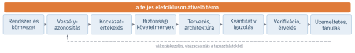
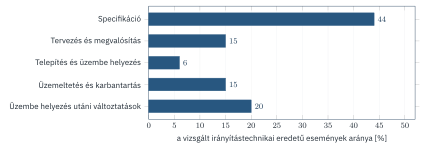
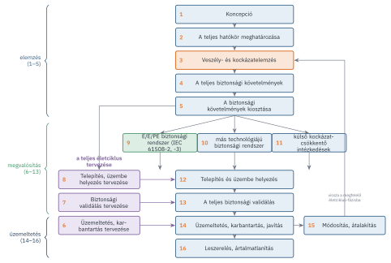
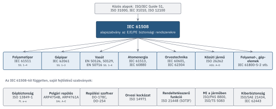
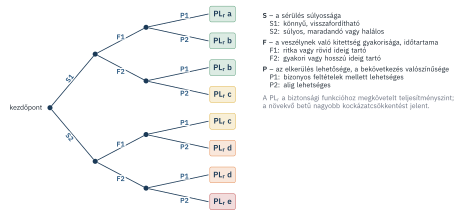

4. A biztonsági életciklus és a szabványok rendszere

A biztonság nem egyetlen tervezési döntés eredménye, hanem egy teljes életcikluson át tartó, dokumentált tevékenységsorozaté, a koncepciótól a leszerelésig. Ez a fejezet azt mutatja be, hogyan írják le ezt az életciklust a funkcionális biztonsági szabványok. Először azt vizsgáljuk meg, miért van szükség életciklus-szemléletre. Ezután részletesen tárgyaljuk az IEC 61508 alapszabványt és a biztonsági integritási szint (SIL) fogalmát, majd áttekintjük az ágazati szabványokat (folyamatipar, közúti jármű, gépipar, vasút, repülés, orvostechnika) és integritási szintjeiket. A fejezet végén a funkcionális biztonság menedzsmentjéről és a jogszabályi háttérről lesz szó.
A fejezet végére képes leszel
- megindokolni az életciklus-szemlélet szükségességét a baleseti okok életciklus-fázisok szerinti megoszlásával;
- leírni az IEC 61508 felépítését és biztonsági életciklusának szakaszait;
- a SIL-t az alacsony és a nagy igénybevételű üzemmódban értelmezni, és ismertetni a SIL teljesítésének három pillérét;
- az ISO 26262 szerint ASIL-t meghatározni a súlyosság, a kitettség és az irányíthatóság alapján;
- az ISO 13849-1 kockázati gráfjával meghatározni a szükséges teljesítményszintet (PLr);
- összevetni és helyesen értelmezni a különböző ágazati integritási szinteket (SIL, ASIL, PL, DAL).
4.1. Miért életciklus?
Az egyesült királysági munkavédelmi hatóság (HSE) az Out of Control című tanulmányában 34 olyan balesetet és súlyos eseményt elemzett, amelyekben irányítástechnikai rendszerek meghibásodása játszott szerepet (Health and Safety Executive 2003). Az eredmény a szakma számára meglepő volt (4.1. ábra): az okok közel fele (44%) a specifikációban keletkezett, további 15% a tervezésben és megvalósításban, és csak a kisebbik rész köthető az üzemeltetéshez. Feltűnő a „üzembe helyezés utáni változtatások” 20%-os aránya is.

A tanulság kettős. Először: a balesetek okainak jelentős része már a tervezés során beépül a rendszerbe, ezért a biztonságot a fejlesztés legelején kell kezdeni. Másodszor: a rendszer biztonsága az üzemeltetés során, a karbantartásokkal és a módosításokkal romolhat, ezért a biztonsági tevékenységnek a leszerelésig tartania kell. Az életciklus-modell mindkét felismerést rendszerbe foglalja: előírja, hogy mely tevékenységeket kell elvégezni, milyen sorrendben, és milyen dokumentációval igazolni.
4.2. Az IEC 61508 alapszabvány
Az IEC 61508 Villamos/elektronikus/programozható elektronikus biztonsági rendszerek funkcionális biztonsága című szabványsorozat (IEC 2010) a funkcionális biztonság alapszabványa (basic safety publication). Első kiadása 1998–2000-ben, második kiadása 2010-ben jelent meg. A harmadik kiadás 2026-ban a végső szavazási szakaszban van, a fő részek hivatalos megjelenése 2027-re várható. A szabvány két célt szolgál: közvetlenül alkalmazható olyan rendszerekre, amelyekre nincs ágazati szabvány, és keretet ad az ágazati szabványoknak (IEC 61511, IEC 62061, EN 50129, ISO 26262 stb.).
A szabvány hét részből áll:
| Rész | Tartalom | Jelleg |
|---|---|---|
| IEC 61508-1 | Általános követelmények (életciklus, menedzsment, dokumentáció) | normatív |
| IEC 61508-2 | Az E/E/PE biztonsági rendszerek hardverkövetelményei | normatív |
| IEC 61508-3 | Szoftverkövetelmények | normatív |
| IEC 61508-4 | Fogalommeghatározások és rövidítések | normatív |
| IEC 61508-5 | Példák a SIL meghatározására | tájékoztató |
| IEC 61508-6 | Útmutató a 2. és 3. rész alkalmazásához (többek között PFD- és PFH-képletek) | tájékoztató |
| IEC 61508-7 | Technikák és intézkedések áttekintése | tájékoztató |
4.2.1. A biztonsági életciklus
A szabvány központi eleme a 16 fázisú teljes biztonsági életciklus (4.2. ábra). Minden fázisnak meghatározott célja, bemenete, kimenete és ellenőrzési követelménye van.

A fázisok három csoportba sorolhatók.
Elemzés (1–5. fázis). Az első két fázis az irányított berendezés és környezetének megértése, valamint az elemzés hatókörének rögzítése. A harmadik fázis, a veszély- és kockázatelemzés, a módszertan kulcsa: itt kell feltárni azokat a meghibásodási lehetőségeket, amelyek balesethez vezethetnek, a normál üzemben, az indításnál, a leállításnál, a karbantartásnál és az előrelátható rendellenes használatnál is. A negyedik fázis a teljes biztonsági követelményeket fogalmazza meg (milyen biztonsági funkciókra van szükség), az ötödik ezeket kiosztja az egyes védelmi rétegekre, és meghatározza a biztonsági funkciók szükséges integritási szintjét. A ReaktorVéd esetében ez az a pont, ahol a hűtés kiesésének veszélyéhez a „gyorszáró szelepek zárása” biztonsági funkció és a SIL 2 követelmény rendelődik (3.4. szakasz).
Megvalósítás (6–13. fázis). A 6–8. fázis az életciklus későbbi szakaszainak tervezését jelenti: hogyan fogják a rendszert üzemeltetni és karbantartani (milyen gyakran kell a proof tesztet elvégezni), hogyan validálják a biztonsági funkciókat, és hogyan telepítik és helyezik üzembe a rendszert. Ezek a tervek a megvalósítással párhuzamosan készülnek, mert a tervezési döntéseket befolyásolják. A 9. fázis az E/E/PE biztonsági rendszer megvalósítása; erre vonatkozik a szabvány 2. (hardver) és 3. (szoftver) része, saját, részletes életciklussal. A 10. fázis a más technológiájú (például mechanikus vagy hidraulikus) biztonsági rendszereket, a 11. a külső kockázatcsökkentő intézkedéseket (például a gyorsasági korlátozást, a védőtöltést vagy a mentési tervet) fedi le. A 12–13. fázis a telepítés, az üzembe helyezés és a teljes biztonsági validálás.
Üzemeltetés (14–16. fázis). A 14. fázis az üzemeltetés, a karbantartás és a javítás; ide tartoznak a proof tesztek és a meghibásodások nyilvántartása. A 15. fázis a módosításokat kezeli: minden változtatás hatását elemezni kell, és vissza kell térni ahhoz az életciklus-fázishoz, amelyet a módosítás érint. A 16. fázis a leszerelés és az ártalmatlanítás, amelynek saját veszélyei vannak (maradék anyagok, akkumulátorok, nyomás alatti részek).
Az életciklus-séma legfontosabb szerepe az, hogy útmutatóként és ellenőrző listaként szolgáljon. Felhívja a figyelmet a kockázatkezeléshez kötődő feladatokra, és biztosítja, hogy egy elemzési vagy tervezési lépés csak indokolt és dokumentált esetben maradhasson el.
4.3. A biztonsági integritási szint (SIL)
A biztonsági integritás annak valószínűsége, hogy egy biztonsági rendszer a megkövetelt biztonsági funkciót meghatározott körülmények között, meghatározott időtartam alatt kielégítően végrehajtja. A biztonsági integritási szint (safety integrity level, SIL) ennek négy diszkrét fokozata, a SIL 1-től (legkisebb) a SIL 4-ig (legnagyobb).
4.3.1. Üzemmódok: alacsony és nagy igénybevétel
A SIL számszerű célértéke attól függ, milyen gyakran kell a biztonsági funkciónak működnie.
- Alacsony igénybevételű üzemmód (low demand mode): a biztonsági funkciót csak igény esetén kell végrehajtani, és az igények gyakorisága nem nagyobb évi egynél. A mérőszám a működési igénykori átlagos meghibásodási valószínűség (average probability of dangerous failure on demand, PFDavg).
- Nagy igénybevételű üzemmód (high demand mode): az igények gyakorisága évi egynél nagyobb. Folyamatos üzemmód (continuous mode): a biztonsági funkció a normál működés része. Mindkét esetben a mérőszám a veszélyes meghibásodás átlagos gyakorisága óránként (average frequency of dangerous failure per hour, PFH).
Az IEC 61508 első kiadása az alacsony igénybevételű üzemmódot úgy definiálta, hogy az igénygyakoriság nem nagyobb évi egynél és nem nagyobb a proof tesztek gyakoriságának kétszeresénél. Ezt a megfogalmazást a 2014-es jegyzet is átvette. A 2010-es második kiadás a proof tesztre vonatkozó feltételt elhagyta; ma egyedül az évi egy igény a határ.
| SIL | PFDavg (alacsony igénybevétel) | RRF | PFH [h-1] (nagy igénybevétel, folyamatos) |
|---|---|---|---|
| 4 | \(10^{-5} \le PFD < 10^{-4}\) | \(10\,000 < RRF \le 100\,000\) | \(10^{-9} \le PFH < 10^{-8}\) |
| 3 | \(10^{-4} \le PFD < 10^{-3}\) | \(1\,000 < RRF \le 10\,000\) | \(10^{-8} \le PFH < 10^{-7}\) |
| 2 | \(10^{-3} \le PFD < 10^{-2}\) | \(100 < RRF \le 1\,000\) | \(10^{-7} \le PFH < 10^{-6}\) |
| 1 | \(10^{-2} \le PFD < 10^{-1}\) | \(10 < RRF \le 100\) | \(10^{-6} \le PFH < 10^{-5}\) |
A két mérőszám dimenziója különbözik: a PFDavg valószínűség (dimenzió nélküli), a PFH gyakoriság (1/óra). Az alacsony igénybevételű funkció által hagyott maradó kockázat gyakorisága az igénygyakoriság és a PFD szorzata (\(F = F_{\mathrm{igény}} \cdot PFD_{\mathrm{avg}}\)), a nagy igénybevételű funkcióé közvetlenül a PFH. A közlekedésben és az energiatermelésben a súlyos következményű veszélyekre jellemzően SIL 3 vagy SIL 4 követelményt támasztanak.
4.3.2. A SIL teljesítésének három pillére
Egy biztonsági funkció akkor teljesíti az előírt SIL-t, ha három, egymástól független feltétel egyszerre teljesül:
- Kvantitatív célérték a véletlenszerű hardvermeghibásodásokra. A funkció PFDavg- vagy PFH-értéke a megfelelő tartományba esik. Ennek számítását a 13. fejezet tárgyalja.
- Architekturális korlátok. A hardver hibatűrése (hardware fault tolerance, HFT: hány meghibásodást visel el a funkció elvesztése nélkül) és a biztonságos meghibásodási hányad (safe failure fraction, SFF) együtt korlátozza az elérhető legnagyobb SIL-t. A korlátok célja, hogy a SIL ne csak kedvező (gyakran optimista) adatokon nyugvó számításból következzen.
- Szisztematikus képesség (systematic capability, SC 1–4). A szisztematikus hibák elkerülésére és kezelésére alkalmazott fejlesztési módszerek, technikák és ellenőrzések szigorúsága. A szabvány fejlesztési, verifikációs és dokumentációs követelményei SIL-szintenként szigorodnak.
A harmadik pillér különösen fontos, mert a szoftverre csak ez alkalmazható. A szisztematikus hibák nem számszerűsíthetők meghibásodási rátával, ezért ellenük a fejlesztési folyamat minőségével kell védekezni (15. fejezet).
4.3.3. A SIL meghatározásának módszerei
A szükséges SIL-t a kockázatértékelésből kell levezetni. Az IEC 61508-5 és az IEC 61511-3 több módszert mutat be:
- kvantitatív módszer: a tolerálható gyakoriságból és a többi védelmi réteg hatásából számított szükséges PFD (3.5. egyenlet);
- rétegzett védelem elemzése (LOPA): félkvantitatív, nagyságrendi becsléseken alapuló módszer, a folyamatiparban a legelterjedtebb (11. fejezet);
- kockázati gráf: kvalitatív döntési fa a következmény súlyossága, a kitettség, az elkerülés lehetősége és az igény valószínűsége alapján. Gyors, de kalibrálni kell, és hajlamos a túl- vagy alulbecslésre;
- kalibrált kockázati mátrix: a 3.3. szakaszban tárgyalt mátrix, a cellákhoz SIL-t rendelve.
Gyakori, de pontatlan szóhasználat: „SIL 2-es érzékelő”, „SIL 3-as PLC”. A SIL egy biztonsági funkcióhoz rendelt követelmény. Egy eszközről csak annyi mondható, hogy egy adott SIL-ig alkalmas (SIL capable) egy funkcióban való felhasználásra, meghatározott feltételekkel (architektúra, proof teszt, felhasználási előírások). Egy SIL 3-ig tanúsított logikai egységből egycsatornás, rosszul karbantartott érzékelőkkel csak alacsonyabb integritású funkció építhető.
4.4. Ágazati szabványok
Az IEC 61508 általános keretét az egyes iparágak a saját sajátosságaikhoz igazították (4.3. ábra). Néhány fontos terület saját, az IEC 61508-tól független hagyománnyal rendelkezik, de fogalmaik egymásba fordíthatók.

4.4.1. Folyamatipar: IEC 61511
Az IEC 61511 (IEC 2016) a folyamatipari biztonsági műszerezett rendszerekre (SIS) vonatkozik. A szabvány a végfelhasználónak és a rendszerintegrátornak szól, nem az eszközgyártónak: az eszközöknek vagy az IEC 61508 szerint tanúsítottnak, vagy „használatban bizonyítottnak” (prior use) kell lenniük. A szabvány saját életciklust ír elő, és a hardver hibatűrésére egyszerűsített követelményt ad: SIL 1-hez és alacsony igénybevételű SIL 2-höz HFT = 0, nagy igénybevételű SIL 2-höz és SIL 3-hoz HFT = 1, SIL 4-hez HFT = 2. A SIL 4 a folyamatiparban rendkívül ritka; a szabvány azt javasolja, hogy ilyen igény esetén inkább a folyamatot kell újratervezni.
A ReaktorVéd biztonsági funkciója az IEC 61511 hatálya alá tartozik. A projekt dokumentumai: a HAZOP-jelentés (5. fejezet), a LOPA-jelentés a SIL-kiosztással (11. fejezet), a biztonsági követelményspecifikáció (safety requirements specification, SRS), a SIL-igazoló számítás (13. fejezet), a validálási terv, valamint az üzemeltetési és karbantartási terv a proof tesztek gyakoriságával és módjával. A specifikáció a funkció minden lényeges jellemzőjét rögzíti: a kioldási határértéket (95 °C), a válaszidőt (10 s), a biztonságos állapotot (mindkét gyorszáró szelep zárva), a SIL-t (2), a proof teszt gyakoriságát (évente), és a téves leállítások megengedett gyakoriságát.
4.4.2. Közúti járművek: ISO 26262
Az ISO 26262 (ISO 2018) a sorozatgyártású közúti járművek E/E rendszereinek funkcionális biztonsági szabványa. Első kiadása 2011-ben, második, a teherautókra, buszokra és motorkerékpárokra is kiterjesztett kiadása 2018-ban jelent meg. A harmadik kiadás (2026-ban DIS, azaz nemzetközi szabványtervezet szakaszban) a gépi tanulás, az agilis fejlesztés és a hibatűrő (fail-operational) architektúrák kérdéseivel bővül. Az IEC 61508-hoz képest a legfontosabb különbségek:
- Tömeggyártás: a biztonságot a fejlesztés során kell igazolni, a példányonkénti validálás nem lehetséges. Az IEC 61508 inkább egyedi vagy kis sorozatú rendszerekre (például egy vegyi üzem védelmi rendszerére) gondol, ahol a telepített rendszert validálják.
- Biztonságosra tervezett termék: a járműben a szabályozó és a biztonsági funkciók gyakran nem választhatók szét (a fékrendszer egyszerre végzi a normál fékezést és a biztonsági funkciót), szemben az IEC 61508 „irányított berendezés + független védelmi rendszer” modelljével.
- A közlekedési helyzet egésze: a kockázatértékelés a vezetőt, a többi közlekedőt és a helyzet irányíthatóságát is figyelembe veszi.
- Biztonsági kultúra: a szabvány kiemelten foglalkozik a biztonsági menedzsmenttel és -kultúrával, mert a nagy komplexitású rendszerekben a balesetek inkább a szervezet működéséből fakadnak.
Az ASIL meghatározása. A veszélyelemzés és kockázatbecslés (hazard analysis and risk assessment, HARA) során minden veszélyes eseményt (egy meghibásodás és egy működési helyzet kombinációját) három paraméterrel jellemeznek (4.3. táblázat): a sérülés súlyossága (S0–S3), a működési helyzetnek való kitettség valószínűsége (E0–E4) és a vezető vagy más érintettek számára a helyzet irányíthatósága (C0–C3).
| Paraméter | 0 | 1 | 2 | 3 | 4 |
|---|---|---|---|---|---|
| S – súlyosság | nincs sérülés | könnyű, közepes sérülés | súlyos, életveszélyes (túlélés valószínű) | életveszélyes (túlélés bizonytalan), halálos | – |
| E – kitettség | elképzelhetetlen | nagyon kis valószínűség | kis valószínűség | közepes valószínűség | nagy valószínűség |
| C – irányíthatóság | általában irányítható | egyszerűen irányítható | általában irányítható | nehezen vagy nem irányítható | – |
Az autóipari biztonsági integritási szint (automotive safety integrity level, ASIL) a három paraméterből egy táblázat alapján adódik (4.4. táblázat). Ha bármelyik paraméter 0 értékű, nincs ASIL-besorolás; az eredmény QM (quality management) is lehet, ami azt jelenti, hogy elég a szokásos minőségirányítási folyamat.
| C1 | C2 | C3 | ||
|---|---|---|---|---|
| S1 | E1 | QM | QM | QM |
| E2 | QM | QM | QM | |
| E3 | QM | QM | A | |
| E4 | QM | A | B | |
| S2 | E1 | QM | QM | QM |
| E2 | QM | QM | A | |
| E3 | QM | A | B | |
| E4 | A | B | C | |
| S3 | E1 | QM | QM | A |
| E2 | QM | A | B | |
| E3 | A | B | C | |
| E4 | B | C | D |
A táblázatnak egyszerű szerkezete van: ha a paraméterek indexét összeadjuk (\(s+e+c\)), akkor 10 esetén ASIL D, 9 esetén C, 8 esetén B, 7 esetén A, ennél kisebb összegnél QM adódik. Ez az összefüggés jól megjegyezhető, de a szabvány a táblázatot tekinti mérvadónak.
A HARA eredménye a biztonsági célok (safety goals) listája. Minden biztonsági cél egy veszélyes esemény megelőzésére vagy hatásának csökkentésére vonatkozó legfelső szintű követelmény, a hozzá tartozó ASIL-lel. A biztonsági célokból vezetik le a funkcionális, majd a technikai biztonsági koncepciót.
Az ISO 26262 lehetővé teszi az ASIL-dekompozíciót: egy magas ASIL-ű követelmény két, egymástól kellően független elemre bontható, alacsonyabb ASIL-lel (például ASIL D = ASIL C(D) + ASIL A(D), vagy ASIL B(D) + ASIL B(D)). A zárójeles betű jelzi az eredeti ASIL-t, amelyhez a függetlenség igazolása kötődik. A dekompozíció csak a szisztematikus képességre vonatkozó követelményeket enyhíti; a hardvermetrikákat továbbra is az eredeti ASIL szerint kell teljesíteni.
Hardvermetrikák. A véletlenszerű hardvermeghibásodásokra az ISO 26262-5 három mérőszámot ír elő (4.5. táblázat): az egypontos hibák metrikáját (single-point fault metric, SPFM), a latens hibák metrikáját (latent fault metric, LFM) és a véletlenszerű hardvermeghibásodásokból eredő biztonsági cél megsértésének valószínűségi metrikáját (probabilistic metric for random hardware failures, PMHF).
| ASIL B | ASIL C | ASIL D | |
|---|---|---|---|
| SPFM | \(\ge 90\%\) | \(\ge 97\%\) | \(\ge 99\%\) |
| LFM | \(\ge 60\%\) | \(\ge 80\%\) | \(\ge 90\%\) |
| PMHF [h-1] | \(< 10^{-7}\) | \(< 10^{-7}\) | \(< 10^{-8}\) |
A 2014-es jegyzet egy ábrája minden ASIL-szinthez óránkénti meghibásodási valószínűséget rendelt (ASIL A-hoz is), és egyértelmű SIL–ASIL-megfeleltetést sugallt. Mindkettő félrevezető. Az ASIL a HARA kvalitatív paramétereiből adódik, és elsősorban a fejlesztési folyamat szigorúságát határozza meg. Valószínűségi célérték (PMHF) csak az ASIL B, C és D szinthez tartozik, és az is csak a véletlenszerű hardvermeghibásodásokra. A SIL és az ASIL közötti megfeleltetést egyik szabvány sem definiálja; a szakirodalomban közölt összevetések tájékoztató jellegűek.
A VészFék egyik veszélyes eseménye: indokolatlan teljes erejű fékezés autópályán, nagy sebességnél, követő jármű jelenlétében. A csapat besorolása és indoklása:
- S3: a hátulról ráfutó jármű nagy sebességkülönbségnél életveszélyes sérülést okozhat;
- E4: az autópályás haladás követő járművel a jármű üzemidejének jelentős része;
- C3: a követő jármű vezetője számára a hirtelen, váratlan teljes fékezés nehezen kezelhető, a VészFék vezetője pedig nem tudja „visszavenni” a fékezést.
Az eredmény ASIL D. A biztonsági cél: „A VészFék nem kezdeményezhet indokolatlan, \(X\) m/s²-nél nagyobb lassulású fékezést \(v > 60\) km/h sebességnél.” A konkrét határértékeket járműteszteken alapuló irányíthatósági vizsgálatok adják. Egy másik veszélyes esemény, a kismértékű, rövid indokolatlan fékezés városi forgalomban, jóval alacsonyabb besorolást kap (például S1, E4, C1 → QM), ami jól mutatja, hogy az ASIL a veszélyes eseményhez, nem a funkcióhoz kötődik.
4.4.3. Gépbiztonság: ISO 13849-1 és IEC 62061
A gépek biztonsági irányítórendszereire két szabvány alkalmazható. Az IEC 62061 (IEC 2021) az IEC 61508 gépipari változata, SIL 1–3 szintekkel. Az ISO 13849-1 (ISO 2023) saját hagyományú, és a teljesítményszint (performance level, PL) fogalmát használja, öt fokozattal (a–e). A PL a nagy igénybevételű üzemmód PFH-tartományaival definiált (4.6. táblázat), és öt tényező együtteséből adódik: a kategória (B, 1, 2, 3, 4, amely az architektúrát és a hibákkal szembeni viselkedést írja le), a csatornánkénti veszélyes meghibásodásig eltelt átlagos idő (MTTFD), az átlagos diagnosztikai lefedettség (DCavg), a közös okú meghibásodások elleni intézkedések és a szisztematikus képesség.
| PL | PFH [h-1] | megközelítőleg megfelelő SIL (IEC 62061) |
|---|---|---|
| a | \(10^{-5} \le PFH < 10^{-4}\) | – |
| b | \(3\cdot10^{-6} \le PFH < 10^{-5}\) | 1 |
| c | \(10^{-6} \le PFH < 3\cdot10^{-6}\) | 1 |
| d | \(10^{-7} \le PFH < 10^{-6}\) | 2 |
| e | \(10^{-8} \le PFH < 10^{-7}\) | 3 |
A szükséges teljesítményszintet (PLr) az ISO 13849-1 kockázati gráfja adja (4.4. ábra). A gráf három paramétere: a sérülés súlyossága (S1: könnyű, S2: súlyos), a veszélynek való kitettség gyakorisága és időtartama (F1: ritka, F2: gyakori), valamint az elkerülés lehetősége, illetve a veszélyes esemény bekövetkezésének valószínűsége (P1: lehetséges, P2: alig lehetséges).

A KoboCella egyik biztonsági funkciója: „Ha a lézerszkenner a robot 1,2 m-es körzetében személyt érzékel, a robot sebessége legfeljebb 250 mm/s lehet; 0,5 m-en belül a robot biztonságosan megáll.” A funkció meghibásodása esetén a robot teljes sebességgel ütközhet a szerelővel.
- S2: a teljes sebességű ütközés fejmagasságban súlyos sérülést okozhat;
- F2: a szerelő a műszak nagy részében a robot munkaterében dolgozik;
- P2: a robot gyors mozgása miatt a szerelő nem tud kitérni.
Az eredmény PLr = e. Ez nagyon szigorú követelmény (3-as vagy 4-es kategóriájú architektúra, nagy diagnosztikai lefedettség). A tervezők ezért megvizsgálják, hogy a robot maximális sebességének és tömegének csökkentésével (inherensen biztonságos tervezés) elérhető-e, hogy a teljes sebességű ütközés se okozzon súlyos sérülést (S1). Ebben az esetben a követelmény PLr = c-re csökkenne. A 7. fejezetben ugyanezt a funkciót rendszerelméleti szemlélettel is megvizsgáljuk.
4.4.4. Vasút, repülés, orvostechnika
Vasút. A vasúti alkalmazásokra a CENELEC-szabványok vonatkoznak: az EN 50126 (CENELEC 2017) a megbízhatóság, rendelkezésre állás, karbantarthatóság és biztonság (RAMS) általános folyamatát, az EN 50129 (CENELEC 2018) a biztonsági elektronikus jelzőrendszereket, az EN 50716 (CENELEC 2023) pedig 2023 óta a vasúti szoftverfejlesztést szabályozza; ez utóbbi az EN 50128 és az EN 50657 helyébe lépett. A vasút négy SIL-szintet használ, amelyekhez a tolerálható veszélyességi ráta (tolerable hazard rate, THR) tartományai tartoznak. A RAMS-szemlélet erőssége, hogy a biztonság mellett a rendelkezésre állást és a karbantarthatóságot is egységes keretben kezeli.
Polgári repülés. A repülésben az ARP4754B (a repülőgépek és rendszereik fejlesztése) és az ARP4761A (a biztonságértékelési folyamat) a meghatározó, mindkettő 2023 decemberi kiadású (SAE International 2023a, 2023b). A biztonságértékelés a funkcionális veszélyelemzéssel (functional hazard assessment, FHA) kezdődik, amely a meghibásodási állapotokat következményük szerint sorolja be (katasztrofális, veszélyes, jelentős, csekély, nincs hatás). Ezekhez a megengedett valószínűségek tartoznak repült óránként: katasztrofális állapotra \(10^{-9}\), veszélyesre \(10^{-7}\), jelentősre \(10^{-5}\). Ezt követi az előzetes és a végleges rendszerbiztonsági értékelés (PSSA, SSA). A fejlesztési biztosítottsági szint (development assurance level, DAL A–E) a szoftverre (DO-178C (RTCA 2011)) és az elektronikus hardverre (DO-254) vonatkozó fejlesztési szigort határozza meg, hasonlóan a SIL szisztematikus pilléréhez.
Orvostechnika. Az orvostechnikai eszközök kockázatkezelésének szabványa az ISO 14971 (ISO 2019), a szoftver életciklus-folyamatoké az IEC 62304 (IEC 2006), amely a szoftvert a lehetséges kár súlyossága szerint A, B és C biztonsági osztályba sorolja.
4.4.5. Az integritási szintek összevetése
A különböző ágazatok integritási szintjei hasonló logikát követnek, de nem egyenértékűek (4.7. táblázat). A meghatározásuk módja (kvantitatív célérték, kvalitatív kockázati paraméterek, következményosztály), az általuk szabályozott tevékenységek köre és a mögöttük álló feltevések eltérnek.
| Ágazat | Szabvány | Integritási szint | Meghatározás alapja | Valószínűségi célérték |
|---|---|---|---|---|
| általános, folyamatipar | IEC 61508, 61511 | SIL 1–4 | szükséges kockázatcsökkentés | PFDavg vagy PFH tartomány |
| közúti jármű | ISO 26262 | ASIL A–D | S, E, C (HARA) | PMHF csak B–D-re |
| gépipar | ISO 13849-1 | PL a–e | S, F, P kockázati gráf | PFH tartomány |
| vasút | EN 50126, 50129 | SIL 1–4 | THR | THR tartomány |
| repülés | ARP4754B, DO-178C | DAL A–E | FHA következményosztály | a meghibásodási állapotra, repült óránként |
| orvostechnika | IEC 62304 | A, B, C osztály | a lehetséges kár súlyossága | nincs |
Egy komponens tanúsítása az egyik ágazat szintjére nem jelenti automatikusan a megfelelést egy másik ágazatban. Az összevetés hasznos a gondolkodásmódok közötti átjáráshoz és a beszállítói lánc kommunikációjához, de a megfelelést mindig az adott ágazat szabványa szerint kell igazolni.
4.5. A funkcionális biztonság menedzsmentje
A szabványok nem csak a műszaki megoldásra, hanem a szervezetre és a folyamatokra is követelményeket támasztanak. A funkcionális biztonság menedzsmentje (functional safety management, FSM) magában foglalja:
- a felelősségek és a kompetenciák rögzítését: ki felel az egyes életciklus-fázisokért, és milyen képzettséggel, tapasztalattal rendelkezik;
- a biztonsági tervet, amely leírja az elvégzendő tevékenységeket, a módszereket, a dokumentációt és az ütemezést;
- a megerősítő intézkedéseket (confirmation measures): a verifikációt, a funkcionális biztonsági felülvizsgálatot (audit) és a funkcionális biztonsági értékelést (assessment), amelyeket az integritási szinttel növekvő függetlenségű személynek, részlegnek vagy szervezetnek kell végeznie;
- a konfigurációkezelést és a változáskezelést (management of change, MoC), amely biztosítja, hogy minden módosítás hatását elemezzék;
- a tapasztalatok gyűjtését: a meghibásodások, a téves leállítások és a majdnem balesetek nyilvántartását és elemzését.
A biztonsági kultúra nem mérhető közvetlenül, de a menedzsment-követelmények sokat elárulnak róla. A 4.8. táblázat az ISO 26262 nyomán összefoglalja a jó és a nem elfogadható biztonsági kultúra jellemzőit.
| Nem elfogadható biztonsági kultúra | Megfelelő biztonsági kultúra |
|---|---|
| A felelősség nem követhető nyomon. | A folyamat biztosítja a biztonsági döntések nyomon követhetőségét. |
| A költség és a határidő elsőbbséget élvez a biztonsággal és a minőséggel szemben. | A funkcionális biztonság a legmagasabb prioritású szempont. |
| Reaktív hozzáállás: széles körű tesztelés a fejlesztés végén, a vezetés csak probléma esetén avatkozik be. | Megelőző hozzáállás: a biztonsági és minőségi kérdéseket a lehető legkorábban felismerik és megoldják. |
| Nincsenek rendszeres fejlesztési ciklusok. | A folyamatos fejlesztés minden folyamat része. |
| A biztonsági aggályt felvető munkatársat problémásnak tekintik. | A biztonsági aggályok felvetését ösztönzik és jutalmazzák. |
4.6. A jogszabályi háttér
A szabványok önkéntesek, de a jogszabályok gyakran rájuk hivatkoznak: az uniós termékszabályozásban a harmonizált szabványok alkalmazása a megfelelőség vélelmét adja. A biztonságkritikus rendszerek szempontjából a legfontosabb uniós jogszabályok 2026 végén:
- Gépekről szóló rendelet, (EU) 2023/1230 (Európai Parlament és Tanács 2023): a gépi irányelvet váltja fel, 2027. január 20-tól alkalmazandó. Kiemelten foglalkozik az önfejlődő (gépi tanulást alkalmazó) biztonsági funkciókkal és a kiberbiztonsági szempontokkal.
- Mesterséges intelligenciáról szóló rendelet, (EU) 2024/1689 (Európai Parlament és Tanács 2024a): a nagy kockázatú MI-rendszerekre vonatkozó kötelezettségeket a 2026-ban elfogadott módosítás (digital omnibus) elhalasztotta. Az önálló, III. melléklet szerinti nagy kockázatú rendszerekre 2027. december 2-től, a szabályozott termékekbe (például gépekbe, járművekbe, orvostechnikai eszközökbe) beépített MI-rendszerekre 2028. augusztus 2-től alkalmazandók.
- Kiberrezilienciáról szóló rendelet, (EU) 2024/2847 (Európai Parlament és Tanács 2024b): a digitális elemeket tartalmazó termékek kiberbiztonsági követelményei; fő kötelezettségei 2027 végétől alkalmazandók.
- Seveso III. irányelv, 2012/18/EU (Európai Parlament és Tanács 2012): a veszélyes anyagokkal kapcsolatos súlyos balesetek megelőzése, a folyamatipari létesítmények biztonsági jelentésének és kockázatértékelésének kerete.
- A közúti járműveknél az ENSZ EGB előírásai (például a fékrendszerekre vonatkozó 13. számú, a kiberbiztonsági 155. számú (UNECE 2021a) és az automatizált sávtartó rendszerekről szóló 157. számú (UNECE 2021b)) a típusjóváhagyás feltételei.
- A baleseti okok jelentős része a specifikációban és a tervezésben keletkezik, egy másik része az üzemeltetés és a módosítások során; ezért a biztonsági tevékenységnek a teljes életciklust le kell fednie.
- Az IEC 61508 16 fázisú biztonsági életciklusa elemzés, megvalósítás és üzemeltetés szakaszokra tagolódik, és ellenőrző listaként is szolgál.
- A SIL egy biztonsági funkció követelménye: alacsony igénybevételnél PFDavg-, nagy igénybevételnél PFH-tartomány. Teljesítéséhez a kvantitatív célérték, az architekturális korlátok és a szisztematikus képesség együtt szükséges.
- Az ISO 26262-ben az ASIL a súlyosság, a kitettség és az irányíthatóság alapján adódik; nem valószínűségi kategória, bár B–D szinten PMHF-célérték tartozik hozzá.
- Az ISO 13849-1 PL-szintjei PFH-tartományokkal definiáltak, a szükséges szintet kockázati gráf adja.
- Az ágazati integritási szintek hasonló logikájúak, de nem egyenértékűek.
- A funkcionális biztonság menedzsmentje (felelősség, kompetencia, független értékelés, változáskezelés) a műszaki megoldással egyenrangú követelmény.
- Egy biztonsági funkció igénygyakorisága évi 3. Melyik üzemmódba tartozik, és milyen mérőszámmal kell jellemezni az integritását?
- Mi a SIL teljesítésének három pillére? Melyik alkalmazható a szoftverre, és miért csak az?
- Határozd meg az ASIL-t: S2, E3, C3! És S3, E2, C2 esetén?
- A KoboCella egy másik funkciójánál S1, F2, P1 adódik. Mekkora a PLr?
- Miért nem lehet egy ISO 26262 szerinti ASIL D-s komponenst automatikusan SIL 3-as funkcióba beépíteni egy folyamatipari védelmi rendszerben?
Megoldás
- Nagy igénybevételű üzemmódba (évi egynél több igény), mérőszáma a PFH (veszélyes meghibásodás átlagos gyakorisága óránként).
- A kvantitatív célérték a véletlenszerű hardvermeghibásodásokra, az architekturális korlátok (HFT, SFF) és a szisztematikus képesség. A szoftverre csak a szisztematikus képesség alkalmazható, mert a szoftverhibák szisztematikusak: nincs véletlenszerű meghibásodási rátájuk, ezért sem PFD-vel, sem hardvermetrikákkal nem jellemezhetők.
- S2, E3, C3: a táblázat szerint ASIL B (az indexösszeg \(2+3+3=8\)). S3, E2, C2: ASIL A (\(3+2+2=7\)).
- A gráfban S1 → F2 → P1 ágon PLr = b.
- Mert a két szabvány más feltevésekre épül (tömeggyártás, a járműre jellemző környezet és üzemmód, eltérő hardvermetrikák és architektúra-követelmények), és nincs közöttük hivatalos megfeleltetés. A komponens felhasználhatóságát az IEC 61511/61508 szerint kell igazolni (például a szükséges meghibásodási adatokkal, a proof teszt módjával és a szisztematikus képesség igazolásával).
- Smith, D. J., Simpson, K. G. L. (2020): The Safety Critical Systems Handbook. 5. kiadás, Butterworth-Heinemann – az IEC 61508 és az ágazati szabványok gyakorlati értelmezése (Smith és Simpson 2020).
- Health and Safety Executive (2003): Out of Control. HSG238 – az irányítástechnikai eredetű balesetek okainak elemzése (Health and Safety Executive 2003).
- Rausand, M. (2014): Reliability of Safety-Critical Systems. Wiley, 1–3. fejezet (Rausand 2014).